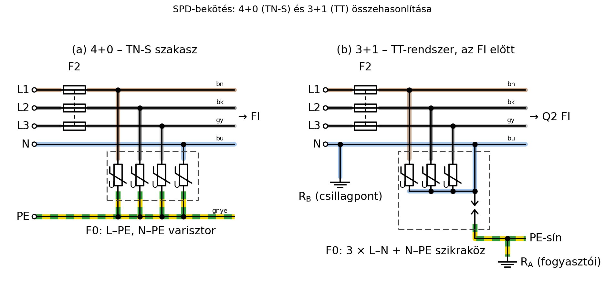
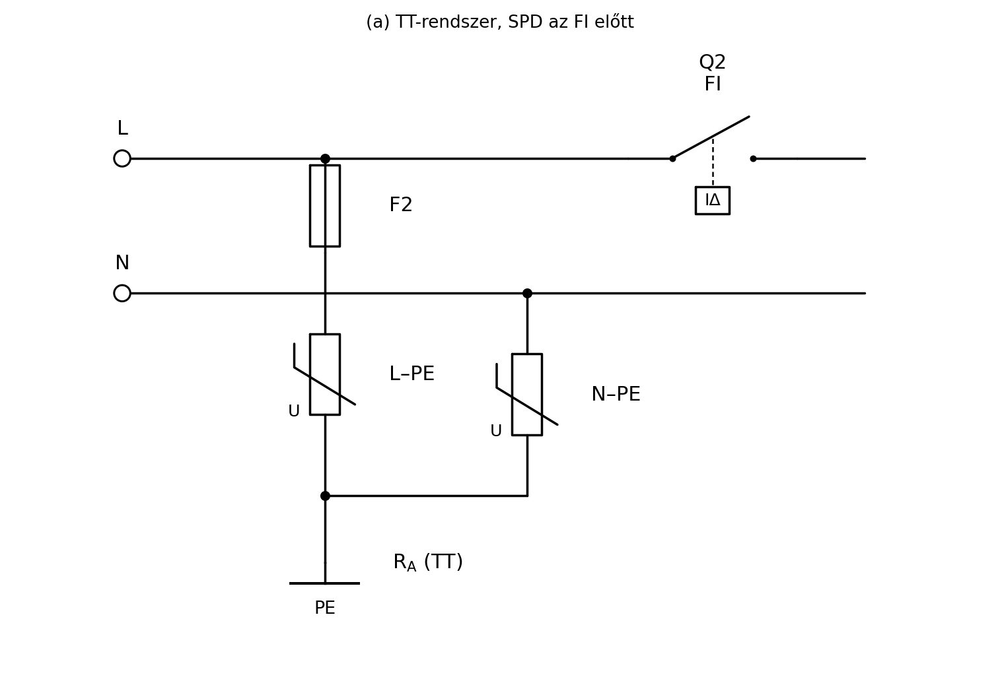
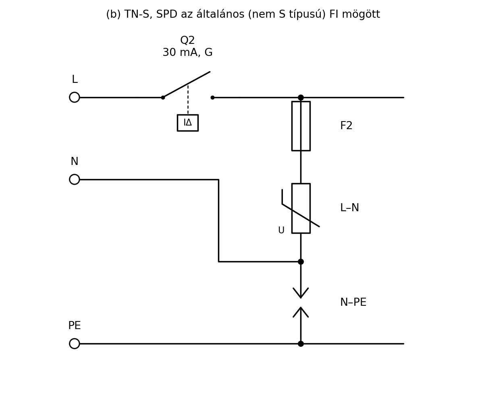
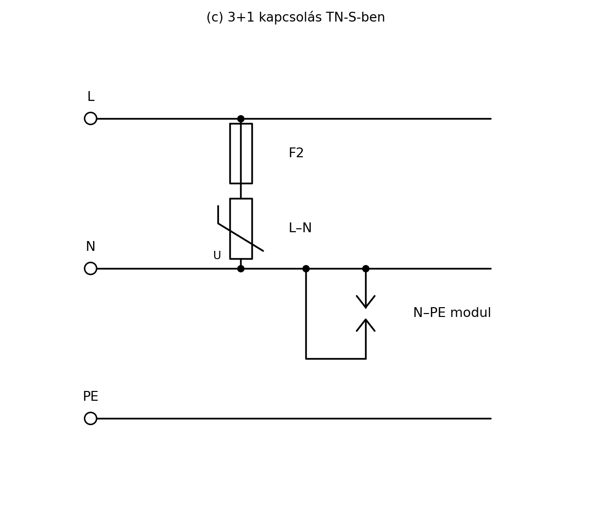
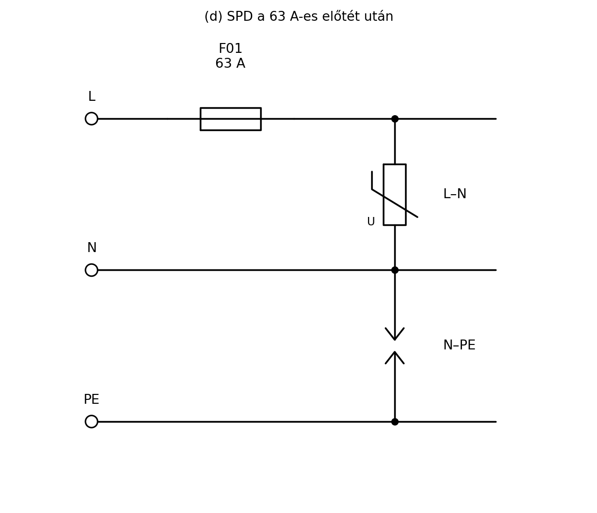
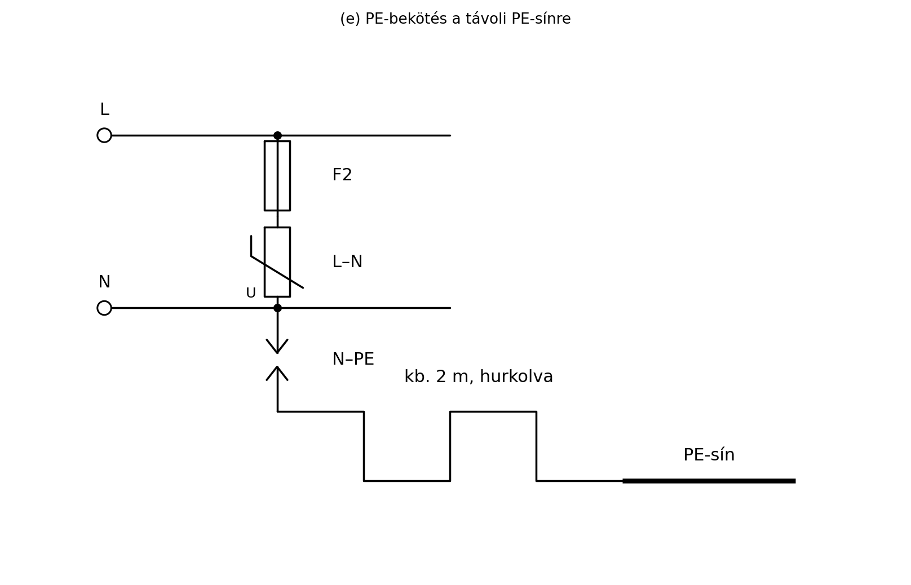

![Családi ház metszete felfogóval, levezetővel és földelővel. A felfogó védőszögén kívüli tér ferde sraffozással LPZ 0A, a védőszögön belüli külső tér pontozással LPZ 0B, a ház belseje szaggatott határral LPZ 1, egy sraffozott fém rack LPZ 2. A bal falon egyetlen belépési ponton jön be az erősáramú földkábel, az adatkábel, az antenna-koax, a víz- és a gázcső; mind a fő EPH-sínre kerül (F0 T1/T2, FA2 adatvonali SPD, FA4 koax-SPD, csőbilincsek), a sín a földelőre csatlakozik. A főelosztóból vezeték megy az alelosztóhoz/rackhez (FA3 az LPZ 1/2 határon) és a TV előtti T3-hoz.](figures/img/ve084-6.png)
Statikus változat (mint a PDF-ben)
A túlfeszültség-védelem gyakran az utolsó pillanatban kerül be a költségvetésbe, pedig a legdrágább háztartási gépek, napelemes inverterek és automatizálási vezérlők élettartama múlik rajta. Amikor egy villámcsapás vagy egy hálózati kapcsolási túlfeszültség eléri az épületet, a védőeszköz nélküli fogyasztók szigetelése pillanatok alatt tönkremehet, még akkor is, ha a kismegszakító ki sem old, mert a lezajló jelenség nem túláram, hanem rövid ideig tartó, nagy feszültségcsúcs. Ebben az alfejezetben azt tanuljuk meg, hogyan építsünk be túlfeszültség-védelmi eszközöket (SPD) úgy, hogy azok valóban megvédjék a rájuk bízott berendezéseket.
Képzeld el úgy a túlfeszültség-védelmet, mint egy sorompórendszert: nem elég egyetlen sorompó a bejáratnál, mert aki átjut rajta, az szabadon garázdálkodhat. A villámvédelemben ezért lépcsőzetes védelmet építünk ki, amely fokozatosan csökkenti a túlfeszültség nagyságát. Az épület határán egy robusztus eszköz fogadja a durva impulzust, az alelosztókban egy gyorsabb eszköz a megmaradt energiát, a kényes készülék előtt pedig egy finom védelem az érzékeny elektronikát.
Az alábbi metszet azt mutatja, hogy a védelmi zóna nem „réteg egy listában”, hanem az épület egy-egy térrésze, és a határán minden belépő vezetőt kezelni kell.
Figyeld meg az ábrán, hogy minden kívülről érkező vezető – az erősáramú kábel, az adat- és az antennakábel, sőt a víz- és a gázcső is – ugyanazon a ponton lép be, és ott kerül a fő EPH-sínre: az aktív vezetők SPD-n (F0, FA2, FA4) keresztül, a fémcsövek közvetlenül, bilinccsel. Az LPZ 0/1 határ tehát nemcsak az erősáramú SPD helye. Ha az adatvonal SPD nélkül lép be, a túlfeszültség azon keresztül éri el a routert és a tévét – ugyanúgy rés a védelmen, mint egy hiányzó T1/T2. A következő zónahatáron (LPZ 1/2, alelosztó vagy rack) az FA3, a legérzékenyebb készülék előtt pedig a T3 fokozat lép működésbe. Az interaktív változatban a zónák és az SPD-k rétegenként ki-be kapcsolhatók (a zónahatár tényleges kijelölése: gördülő gömb vagy védőszög, ellenőrizendő: MSZ EN 62305-3, -4).
Definíció. A túlfeszültség-védelmi eszköz (SPD, Surge Protective Device) olyan készülék, amely normál üzemi feszültségen nagy ellenállást mutat (gyakorlatilag nem vezet), túlfeszültség hatására viszont kis ellenállásúvá válik, levezeti a föld felé a túlfeszültségből származó áramot, majd a túlfeszültség megszűnte után visszaáll a nem vezető állapotba. A régebbi, köznyelvi elnevezése: túlfeszültség-levezető.
A gyakorlatban három fő típust különböztetünk meg, amelyeket karakterisztikájuk, vizsgálati hullámformájuk és beépítési helyük szerint választunk ki:
T1 (I. osztályú) SPD. A közvetlen villámcsapás energiájának levezetésére tervezett eszköz. Vizsgálata hullámformájú impulzusárammal történik. Jellemző paramétere a levezetőképesség (impulzusáram), amely tipikusan , vagy nagyságrendű lehet. Beépítése a főelosztóban, a zónahatár (LPZ 0 és LPZ 1) átlépésénél indokolt, különösen akkor, ha az épület külső villámvédelmi rendszerrel rendelkezik, vagy a betáplálás szabadvezetéken (légvezetéken) érkezik. (ellenőrizendő: a konkrét gyártói adatlapok és a hatályos szabvány csapásponti követelményei)
T2 (II. osztályú) SPD. A távoli villámcsapások, hálózati kapcsolások által indukált túlfeszültségek kezelésére szolgál. Vizsgálata hullámformával történik. Jellemző paramétere a névleges levezetőképesség és a maximális levezetőképesség . Tipikus értékei között mozognak. Beépítése az alacsonyabb zónahatárokon (például alelosztók, gépi elosztók) szükséges.
T3 (III. osztályú) SPD. Az érzékeny készülékek közvetlen védelmét látja el, például egy dugaszoló aljzatban, informatikai eszköz előtt vagy egy vezérlőszekrényben. Kombinált hullámmal vizsgálják ( feszültség és áram). Feladata a T2-es (vagy T1-es) fokozat után megmaradt, készülékekre már veszélyes feszültség finom szintre csökkentése.
Védelmi jellemzők. Az SPD-k legfontosabb adata nem az, hogy mekkora áramot viselnek el, hanem hogy mekkora feszültséget engednek át a védett berendezés felé. Ezt nevezzük feszültségvédelmi szintnek, jelölése . Minél kisebb , annál jobb a védelem, de egyúttal annál közelebb van a hálózati üzemi feszültséghez. A védelmi szintnek illeszkednie kell a védendő készülék impulzusfeszültség-tűréséhez (). Például egy érzékeny informatikai eszköz értéke lehet, ezért az őt védő SPD-nek legalább értékkel kell rendelkeznie; ez csak szükséges feltétel, mert a készülékre a bekötővezeték feszültsége is rákerül (lásd alább a vezetékhossz hatásának számszerűsítését). A túlfeszültség-védelem akkor hatékony, ha a fokozatok illeszkednek egymáshoz: a durva T1-es már nem enged át magas energiát, a közepes T2-es levágja a feszültség nagy részét, a finom T3-as pedig a készülék biztonságos szintjére szorítja le.
A választás alapja, hogy a védendő helyen mekkora impulzusfeszültséget kell kibírnia a készülékeknek. Ezt a túlfeszültség-kategóriák rögzítik (230/400 V-os berendezés, ellenőrizendő: MSZ HD 60364-4-44):
| Kategória | Hol, mi | |
|---|---|---|
| IV | 6 kV | a betáplálás kezdete (fogyasztásmérő, főbiztosító) |
| III | 4 kV | rögzített szerelés: elosztó, kapcsolók, fix motor |
| II | 2,5 kV | háztartási gépek, hordozható szerszámok |
| I | 1,5 kV | érzékeny elektronika (külön védelemmel) |
Lépéssor (tanulási döntési sor; a végső választás a tervezőé):
Az SPD beépítése az elosztóban néhány áramköri szabályon múlik. A készüléket a védendő fogyasztói áramkörökkel párhuzamosan kötjük. Bekötési rendszerek: a 3+1 (CT2) kapcsolásban az L–N közé varisztoros modulok, az N–PE közé összegző szikraköz kerül; a 4+0 (CT1) kapcsolásban L–PE és N–PE elemek vannak. TN-C-S rendszerben a szétválasztás után mindkettő alkalmazható, TT-rendszerben a 3+1 szükséges (ellenőrizendő: MSZ HD 60364-5-534, gyártói előírás). A V-bekötés ettől független szerelési mód: a fővezeték az SPD kettős kapcsain át halad, így nincs külön bekötővezeték. A háromfázisú 3+1 kapcsolás egyetlen készülékházban három fázis–nulla és egy nulla–PE modult tartalmaz. Az L–N modulok általában feszültségfüggő ellenállást (varisztort), az N–PE modul pedig szikraközt tartalmaz, így a normál üzemi szivárgó áram nem terheli a védőföldet.

Szabály. Az SPD-t lehetőleg V-bekötéssel, vagy ha az nem megoldható, úgy kell felszerelni, hogy az aktív vezető és az SPD közötti bekötővezeték a lehető legrövidebb legyen. A vezeték induktivitása ugyanis megnöveli a védett készülékre jutó feszültséget, mert a levezetés alatt a meredek áramimpulzus a vezeték induktivitásán is feszültséget ejt. A gyakorlatban ajánlott a teljes bekötési hosszt (a sínről az SPD-re és az SPD-ről a PE-sínre) alatt tartani. Ha ez nem megoldható, akkor az SPD-t a védendő fogyasztóhoz közelebb kell helyezni, vagy rövidebb, vastagabb vezetőt kell használni. A rövid vezeték önmagában nem mindig elég (lásd a számításokat), ilyenkor V-bekötés vagy a készülék elé szerelt T3-as SPD szükséges. (ellenőrizendő: a hatályos szerelési szabvány és a gyártó által előírt maximális vezetékhossz)
Tartalék védelem. Minden SPD elé be kell iktatni egy tartalék biztosítót vagy kismegszakítót, amelynek két feladata van: védi a hálózatot az SPD meghibásodása (például élettartam végén bekövetkező rövidzárlata) esetén, és lehetővé teszi az SPD feszültségmentes leválasztását cseréhez. A tartalék védelem névleges árama a gyártó által megadott érték (tipikusan ), és soha nem szabad ezt az értéket túllépni, mert a hibás levezetőt a hálózati védelem nem tudná kellően gyorsan leválasztani.
Az eddigi rajz egyetlen fázisra egyszerűsített. A valós elosztóban azonban egyszerre kell látni a mérőhelyet, a PEN-szétválasztást, a főkapcsolót, az SPD-t, az FI-t és a leágazásokat, mert az SPD helyét éppen ezekhez képest kell megválasztani. Az alábbi többvonalas rajz egy háromfázisú TN-C-S családi ház teljes, lépcsőzetes védelmét mutatja.
![Többvonalas kapcsolási rajz. Balról jobbra négy vízszintes vezető: L1 barna, L2 fekete, L3 szürke, alul a PEN zöld-sárga kék végjelöléssel. Az X0 bejövő kapcsok után az F01 3 × 32 A főbiztosító szaggatott, plombált keretben. A PEN-kapocsnál zöld-sárga híd megy le a PE-sínre, innen a negyedik vezető kék N. Ezután a Q1 négypólusú főkapcsoló és az F2 tartalékbiztosító következik. Az F0 szaggatott keretben: három varisztor L1–N, L2–N, L3–N és egy N–PE összegző szikraköz a PE-sínre; a fővezetékek a kapcsain haladnak át (V-bekötés), a1 és a2 jelölve; fölötte LPZ 0/1 felirat. Ezután a Q2 négypólusú FI 40 A / 30 mA, FI előtt | FI után felirattal. A leágazások: F3 B16 dugaljkör, benne az FA3 T3 SPD (varisztor és szikraköz) a TV-aljzat XD1 előtt, LPZ 1/2 határ, T2→T3 legalább 5 m; F4 B10 világítás az E1 lámpával; F5 B16 háromfázisú tűzhely három fűtőelemmel csillagban. A PE-sín a fő EPH-sínre, onnan az R_A földelőre csatlakozik; az EPH-sínre víz, gáz és fémszerkezet kerül.](figures/img/ve084-4.png)
Összekötési lista (honnan–hová).
| Honnan | Hová | Vezető, megjegyzés |
|---|---|---|
| X0.L1, X0.L2, X0.L3 | F01 (plombált) → Q1.1, Q1.3, Q1.5 | barna, fekete, szürke |
| X0.PEN | PEN-kapocs → PE-sín (híd) és N → Q1.N | zöld-sárga, kék végjelöléssel; a híd után az N kék |
| Q1.2, Q1.4, Q1.6 | F2 (ha kell) → F0.L1, L2, L3 (V-kapocs) → Q2.1, Q2.3, Q2.5 | a fővezeték az SPD kettős kapcsán halad át |
| Q1.N | F0.N (V-kapocs) → Q2.N | kék |
| F0.PE | PE-sín | zöld-sárga, , (ellenőrizendő: gyártói adatlap) |
| PE-sín | fő EPH-sín → földelő () | zöld-sárga; az EPH-sínre víz-, gázcső, fémszerkezet |
| Q2 kimenete | F3 B16 (dugalj, FA3 T3), F4 B10 (világítás), F5 B16 3P (tűzhely) | a T3 a dugaljban vagy sorkapocsba építve, az érzékeny készülék előtt |
Olvasd végig a rajzot balról jobbra! Az SPD azért kerül az FI elé (a hálózat felé), mert így a levezetett impulzusáram nem folyik át az FI-n: nem okoz téves kioldást, és nem is teszi tönkre a készüléket. Ha az SPD mégis az FI után van, akkor az FI-nek impulzusáram-állónak, S-típusú (késleltetett) kivitelűnek kell lennie, és az N–PE levezetés miatt téves kioldásra is számítani kell (ellenőrizendő: MSZ HD 60364-5-534, MSZ HD 60364-4-443). A „zivatarkor old a FI” jelenség keresését az Áram-védőkapcsoló (FI) és kiegészítő védelem alfejezet hibakeresési táblázata is felsorolja. Az SPD a PEN-szétválasztás után áll, így a 3+1 kapcsolás N–PE szikraköze értelmezhető; a TN-C szakaszon (a szétválasztás előtt) csak 3+0 kapcsolás lehetséges (L–PEN modulok), ezt itt csak megemlítjük. A V-bekötés miatt a fővezeték az F0 kettős kapcsain halad át, ezért nincs külön bekötővezeték; csak a rövid PE-ág marad. Az F2 tartalékbiztosító csak akkor kell, ha az F01 mérőhelyi főbiztosító nagyobb a gyártó által megengedett legnagyobb előtétbiztosítónál; egyébként az F01 látja el ezt a szerepet. A T3-as fokozat azért kell a gondos szerelés ellenére is, mert a 0,5 m-es bekötés is -ot adott a feladatgyűjteménybeli (23.3) példában – ez a TV vagy az informatikai eszköz -os tűrésének sokszorosa. A T2 és a T3 közötti vezetékhossz legalább kb. 5 m legyen, vagy koordinált (egy gyártótól, együttműködésre bevizsgált) terméket kell használni (ellenőrizendő: gyártói koordinációs adat).
Ellenőrző kérdés: a rajzon melyik készülék old ki, ha az F0 egyik varisztora élettartama végén zárlatossá válik – és miért nem az FI?
A két bekötési mód közti választást a hálózati rendszer (lásd Hálózati rendszerek) és a kioldási feltétel (Önműködő lekapcsolás) dönti el. Az alábbi két rajz egymás mellett mutatja a 4+0 kapcsolást egy TN-S szakaszon és a 3+1 kapcsolást TT-rendszerben.

Hibaeset-számítás TT-ben: miért nem jó a 4+0? Tegyük fel, hogy 4+0 kapcsolásnál az L1–PE varisztor élettartama végén zárlatossá válik. A hibaáram útja: L1 → varisztor → PE → → föld → → a transzformátor csillagpontja. Legyen , , :
Ellenőrzés: V/Ω = A, A·Ω = V. A 7,2 A messze a 32 A-es tartalékbiztosító névleges árama alatt van, ezért az F2 nem old ki, és a PE-re kötött összes test tartósan kb. 216 V-on van – életveszély. 3+1 kapcsolásnál ugyanez a meghibásodás L–N zárlat: a hurok fém vezetőkön záródik, a zárlati áram nagy, az F2 kiold. Az N–PE szikraköz üzemi feszültségen nem vezet, ezért a meghibásodott L–N modul nem visz feszültséget a PE-re.
| Hálózati rendszer | Megengedett SPD-kapcsolás | Megjegyzés |
|---|---|---|
| TN-C (a PEN-szétválasztás előtt) | 3+0 | L–PEN modulok; nincs külön N |
| TN-C-S (a szétválasztás után) | 4+0 vagy 3+1 | a gyakorlatban mindkettő; a gyártói előírás dönt |
| TN-S | 4+0 vagy 3+1 | mint fent |
| TT | csak 3+1, az FI előtt | a 4+0 L–PE modul zárlata nem old ki (lásd a számítást) |
(ellenőrizendő: MSZ HD 60364-5-534, gyártói előírás)
A bekötővezeték induktivitása a levezetett áram meredekségével arányos feszültséget kelt. Ez a legfontosabb szerelési hiba forrása. A levezetett impulzusáram meredeksége nagyon nagy, tipikusan nagyságrendű (szigorú tanulási érték, a villám első részvillámához közelebbi; a 8/20 µs-os T2-impulzusnál a gyakorlati számítások kisebb meredekséggel, kb. 1 kV/m ökölszabállyal is dolgoznak, ellenőrizendő: gyártói alkalmazási útmutató). Egy hosszú szerelővezeték induktivitása körülbelül . Összefüggés. Az induktivitáson eső feszültség:

Az ábra bal oldalán a hagyományos bekötés látható: az SPD egy hosszú vezetékkel csatlakozik a fázisra és egy hosszúval a PE-re, ezek induktív feszültsége hozzáadódik a védelmi szinthez. V-bekötésnél a fővezeték az SPD kettős kapcsain halad át, így külön bekötővezeték gyakorlatilag nincs. A jobb oldali oszlopok a feladatgyűjteménybeli (23.3) példák számait mutatják: V-bekötésnél kb. 1,5 kV, 0,5 m-es bekötésnél 6,5 kV, 2 m-esnél 21,5 kV jut a készülékre; a vízszintes vonalak a jellemző impulzustűrések (1,5; 2,5; 4 kV). A HTML-kiadásban a hossz, a meredekség, az és az állítható.
Szabály. Védeni kell minden vezetőt, amely a zónahatárt átlépi. Az erősáramú SPD önmagában nem védi a tévét, ha a túlfeszültség az antennakábelen érkezik. Két külön vonal (például erősáram és hálózati adatkábel) között is felléphet nagy potenciálkülönbség, mert a becsapáskor a földpotenciál és a vezetékekben indukált feszültség eltérő.
Jellemző adat-SPD-típusok (gyártótól függetlenül):
Bekötési szabály. Az adat-SPD földelőkapcsa ugyanarra a fő EPH-sínre (vagy a hozzá közeli, azzal összekötött pontra) kerüljön, rövid vezetékkel, mint az erősáramú SPD-é. Az antenna árnyékolását és tartóját EPH-ba kell kötni (ellenőrizendő: MSZ EN 60728-11, MSZ EN 62305-4). A kültéri kamera vagy kapuállomás kábele az épületbe lépéskor kapjon SPD-t. Az adat-SPD-t a jelhez (feszültség, sávszélesség, PoE) illeszkedőre válaszd, különben a kapcsolatot rontja.
Szabvány. A kisfeszültségű villamos berendezések túlfeszültség-védelmére vonatkozó alapvető követelményeket a Külső és belső villámvédelmi rendszer alfejezet vonatkozó szabványai, valamint a belső villámvédelem kialakítására vonatkozó MSZ EN 62305-4 szabvány, az SPD-kre vonatkozó termékszabvány (MSZ EN 61643-sorozat) és az épületvillamos berendezések kiválasztását tárgyaló MSZ HD 60364-5-53 előírásai tartalmazzák. A szabványok előírják a fokozatolt védelmet, az energiaközi koordinációt, a feszültségvédelmi szint illesztését a védendő készülékekhez, valamint a tartalék védelem alkalmazását. A konkrét határértékeket, táblázatokat és beépítési távolságokat mindig a hatályos kiadás és a gyártói műszaki dokumentáció alapján kell ellenőrizni. (ellenőrizendő: a szabványok aktuális kiadásai és azok pontos hivatkozási számai)
Egy lakásfelújítás során a tulajdonos kérésére az elosztóba egy hálózati feszültségű T2-es SPD-t tettek. A szerelő a készüléket a főkapcsoló utáni gyűjtősínről, külön tartalék kismegszakítón át táplálta, a bekötővezeték azonban a szokásosnál hosszabb volt, mert a készülék a sor végére került. Pár hónappal később egy zivatart követően a házban a kazán vezérlőelektronikája és egy drága TV a szigetelésromlás miatt meghibásodott, miközben a kismegszakítók nem oldottak le. A hiba oka nem a kismegszakítóban, hanem a levezető hatékonyságában volt. A hosszú bekötővezeték induktivitása miatt a túlfeszültség nagy része nem a földbe, hanem a belső hálózatra jutott, mert a levezető kapcsain összeadódott a és a vezetéken eső feszültség. A javítás során az SPD-t a tartalék biztosító mellé, a gyűjtősínekre szerelték, V-bekötéssel, -nél rövidebb bekötővezetékkel, a kazán elé pedig T3-as SPD-t is tettek (a szigorú -es értékkel már is -ot adna, ami a kazánelektronikának sok lehet). Az új rendszer már megfelelően védte a belső hálózatot.
Hosszú bekötővezeték. A leggyakoribb hiba, amikor az SPD-t a sor végére, a védendő fogyasztóktól távollévő sínre szerelik, és a bekötővezeték tekercsszerűen fel van hurkolva. Helyes gyakorlat: az SPD közvetlenül a tartalék biztosítóra, a PE-sín fölé kerül, minimális, egyenes vezetékkel.
A tartalék biztosító elhagyása. Vannak, akik közvetlenül a gyűjtősínről táplálják az SPD-t, mert “nincs szükség rá”. Helyes gyakorlat: a tartalék biztosító látja el az SPD-t rövidzárlat ellen, ha az élettartama végén zárlatossá válik. Tartalék védelem nélkül a főkapcsoló vagy a mérőhelyi biztosítás oldana le, és az egész épület áram nélkül marad, vagy a hibás SPD tüzet okozhat.
T3-as alkalmazása T2-es nélkül. Egy érzékeny informatikai hálózat elé önmagában T3-as SPD-t tesznek, miközben a főelosztóban nincs T2-es. Helyes gyakorlat: a T3-as csak kiegészítő védelem. A nagyenergiájú túlfeszültség tönkreteszi a kis teherbírású T3-as eszközt, mielőtt az le tudná vezetni a túlfeszültséget.
Mind az öt egyszerűsített (egy fázisra rajzolt) kapcsoláson pontosan egy hiba van. Jegyezd fel a hibát, a következményt és a javítást, utána ellenőrizz a „Megoldások” alatt.





Biztonsági korlát. Elosztóban csak arra jogosult személy dolgozhat; tanulóként felügyelet mellett vegyél részt. Mielőtt bármihez nyúlsz, tartsd be az öt biztonsági szabályt:
A vizsgálat lépései:
| Tünet | Valószínű ok | Teendő |
|---|---|---|
| piros állapotjelző | a betét elhasználódott | csere azonos típusra, ok keresése |
| F2 kioldott, nem kapcsolható vissza | zárlatos betét | betét kivétele, csere |
| FI old zivatarkor | SPD az FI mögött | SPD az FI elé (vagy S típusú FI), tervező |
| szigetelésmérés: L–PE 0,3 MΩ | SPD nincs leválasztva | betét ki, mérés ismétlése |
| készülékek tönkrementek, SPD ép | belépő adatvonal vagy hosszú bekötés | adat-SPD, rövid bekötés, T3 |
Gyakorlás: ennek az alfejezetnek a kidolgozott példái, gyakorlatai és megoldással ellátott feladatai az Összefoglaló feladatgyűjtemény villanyszerelő tanulóknak című kötet 23.3 szakaszában találhatók.
A túlfeszültség-védelmi eszközök (SPD) lépcsőzetes védelmet nyújtanak, típusukat a védendő zóna határozza meg. A T1-es (I. osztályú) a közvetlen villámcsapás energiáját vezeti le, a T2-es (II. osztályú) az indukált túlfeszültségeket kezeli, a T3-as (III. osztályú) pedig az érzékeny készülékek előtti finom védelmet látja el. A védelem hatékonyságát a feszültségvédelmi szint () és a bekötővezeték induktivitása határozza meg. A hosszú bekötővezeték a meredek áramimpulzus hatására jelentős feszültséget ejt (), amely hozzáadódik a védelmi szinthez, és tönkreteheti a védendő eszközt. Ezért az SPD-t mindig közvetlenül a tartalék biztosítóra, a lehető legrövidebb vezetékkel, lehetőleg V-bekötéssel kell kötni. Az SPD kopó alkatrész, állapotjelzője alapján cserélni kell. Ezt a védelmi koordinációt alkalmazzuk a Napelemes rendszerek és háztartási méretű kiserőmű alfejezetben az inverter védelménél is.
A szövegben szereplő szabványhivatkozások – MSZ EN 62305-4, MSZ EN 61643-sorozat, MSZ HD 60364-5-53 – aktuális kiadását ellenőrizni kell. Az SPD-kre vonatkozó paraméterek (, , , ) és a bekötővezetékre vonatkozó -es ajánlás gyártói és szabványi adatokon alapuló tanulási érték, amelyet a kiadás előtt a hatályos előírásokkal és a konkrét termékek műszaki adatlapjaival egyeztetni kell. A példákban szereplő hullámformák (, ) és a vezeték induktivitásának értéke tipikus, szemléltető adat.